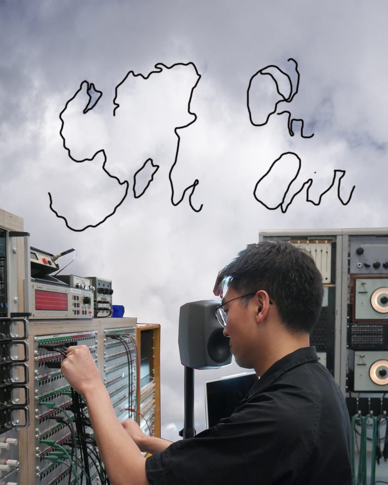

Sou Yan Ting Antonio
Electronic music, improvisation, and algorithmic composition.
Current master's student in the Institute of Sonology, Royal Conservatoire The Hague, with a research focus on algorithmic composition, machine listening, and emergent sonic systems.
News
Live performance at Kunstbar, The Hague (2025)
Interview
Sharing speech-oriented computer music with Gg[ghay] on air @radio.worm, Rotterdam (2025)
